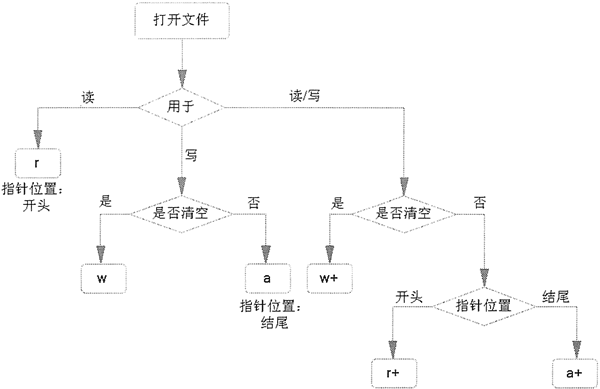

Python open()函数详解：打开指定文件
open() 函数用于创建或打开指定文件，该函数的常用语法格式如下：
file = open(file_name [, mode='r' [ , buffering=-1 [ , encoding = None ]]])
此格式中，用 [] 括起来的部分为可选参数，即可以使用也可以省略。其中，各个参数所代表的含义如下：- file：表示要创建的文件对象。
- file_name：要创建或打开文件的文件名称，该名称要用引号（单引号或双引号都可以）括起来。需要注意的是，如果要打开的文件和当前执行的代码文件位于同一目录，则直接写文件名即可；否则，此参数需要指定打开文件所在的完整路径。
- mode：可选参数，用于指定文件的打开模式。可选的打开模式如表 1 所示。如果不写，则默认以只读（r）模式打开文件。
- buffering：可选参数，用于指定对文件做读写操作时，是否使用缓冲区（本节后续会详细介绍）。
- encoding：手动设定打开文件时所使用的编码格式，不同平台的 ecoding 参数值也不同，以 Windows 为例，其默认为 cp936（实际上就是 GBK 编码）。
open() 函数支持的文件打开模式如表 1 所示。
| 模式 | 意义 | 注意事项 |
|---|---|---|
| r | 只读模式打开文件，读文件内容的指针会放在文件的开头。 | 操作的文件必须存在。 |
| rb | 以二进制格式、采用只读模式打开文件，读文件内容的指针位于文件的开头，一般用于非文本文件，如图片文件、音频文件等。 | |
| r+ | 打开文件后，既可以从头读取文件内容，也可以从开头向文件中写入新的内容，写入的新内容会覆盖文件中等长度的原有内容。 | |
| rb+ | 以二进制格式、采用读写模式打开文件，读写文件的指针会放在文件的开头，通常针对非文本文件（如音频文件）。 | |
| w | 以只写模式打开文件，若该文件存在，打开时会清空文件中原有的内容。 | 若文件存在，会清空其原有内容（覆盖文件）；反之，则创建新文件。 |
| wb | 以二进制格式、只写模式打开文件，一般用于非文本文件（如音频文件） | |
| w+ | 打开文件后，会对原有内容进行清空，并对该文件有读写权限。 | |
| wb+ | 以二进制格式、读写模式打开文件，一般用于非文本文件 | |
| a | 以追加模式打开一个文件，对文件只有写入权限，如果文件已经存在，文件指针将放在文件的末尾（即新写入内容会位于已有内容之后）；反之，则会创建新文件。 | |
| ab | 以二进制格式打开文件，并采用追加模式，对文件只有写权限。如果该文件已存在，文件指针位于文件末尾（新写入文件会位于已有内容之后）；反之，则创建新文件。 | |
| a+ | 以读写模式打开文件；如果文件存在，文件指针放在文件的末尾（新写入文件会位于已有内容之后）；反之，则创建新文件。 | |
| ab+ | 以二进制模式打开文件，并采用追加模式，对文件具有读写权限，如果文件存在，则文件指针位于文件的末尾（新写入文件会位于已有内容之后）；反之，则创建新文件。 |
图 2 中，将以上几个容易混淆的文件打开模式的功能做了很好的对比：文件打开模式，直接决定了后续可以对文件做哪些操作。例如，使用 r 模式打开的文件，后续编写的代码只能读取文件，而无法修改文件内容。

图 2 不同文件打开模式的功能
#当前程序文件同目录下没有 a.txt 文件
file = open("a.txt")
print(file)
当以默认模式打开文件时，默认使用 r 权限，由于该权限要求打开的文件必须存在，因此运行此代码会报如下错误：
Traceback (most recent call last):
File "C:\Users\mengma\Desktop\demo.py", line 1, in <module>
file = open("a.txt")
FileNotFoundError: [Errno 2] No such file or directory: 'a.txt'
现在，在程序文件同目录下，手动创建一个 a.txt 文件，并再次运行该程序，其运行结果为：
<_io.TextIOWrapper name='a.txt' mode='r' encoding='cp936'>
可以看到，当前输出结果中，输出了 file 文件对象的相关信息，包括打开文件的名称、打开模式、打开文件时所使用的编码格式。使用 open() 打开文件时，默认采用 GBK 编码。但当要打开的文件不是 GBK 编码格式时，可以在使用 open() 函数时，手动指定打开文件的编码格式，例如：
file = open("a.txt",encoding="utf-8")
注意，手动修改 encoding 参数的值，仅限于文件以文本的形式打开，也就是说，以二进制格式打开时，不能对 encoding 参数的值做任何修改，否则程序会抛出 ValueError 异常，如下所示：ValueError: binary mode doesn't take an encoding argument
open()是否需要缓冲区
通常情况下、建议大家在使用 open() 函数时打开缓冲区，即不需要修改 buffing 参数的值。为什么呢？原因很简单，目前为止计算机内存的 I/O 速度仍远远高于计算机外设（例如键盘、鼠标、硬盘等）的 I/O 速度，如果不使用缓冲区，则程序在执行 I/O 操作时，内存和外设就必须进行同步读写操作，也就是说，内存必须等待外设输入（输出）一个字节之后，才能再次输出（输入）一个字节。这意味着，内存中的程序大部分时间都处于等待状态。如果 buffing 参数的值为 0（或者 False），则表示在打开指定文件时不使用缓冲区；如果 buffing 参数值为大于 1 的整数，该整数用于指定缓冲区的大小（单位是字节）；如果 buffing 参数的值为负数，则代表使用默认的缓冲区大小。
而如果使用缓冲区，则程序在执行输出操作时，会先将所有数据都输出到缓冲区中，然后继续执行其它操作，缓冲区中的数据会有外设自行读取处理；同样，当程序执行输入操作时，会先等外设将数据读入缓冲区中，无需同外设做同步读写操作。
open()文件对象常用的属性
成功打开文件之后，可以调用文件对象本身拥有的属性获取当前文件的部分信息，其常见的属性为：- file.name：返回文件的名称；
- file.mode：返回打开文件时，采用的文件打开模式；
- file.encoding：返回打开文件时使用的编码格式；
- file.closed：判断文件是否己经关闭。
# 以默认方式打开文件
f = open('my_file.txt')
# 输出文件是否已经关闭
print(f.closed)
# 输出访问模式
print(f.mode)
#输出编码格式
print(f.encoding)
# 输出文件名
print(f.name)
程序执行结果为：
False
r
cp936
my_file.txt
注意，使用 open() 函数打开的文件对象，必须手动进行关闭（后续章节会详细讲解），Python 垃圾回收机制无法自动回收打开文件所占用的资源。
关注公众号「站长严长生」，在手机上阅读所有教程，随时随地都能学习。内含一款搜索神器，免费下载全网书籍和视频。

微信扫码关注公众号